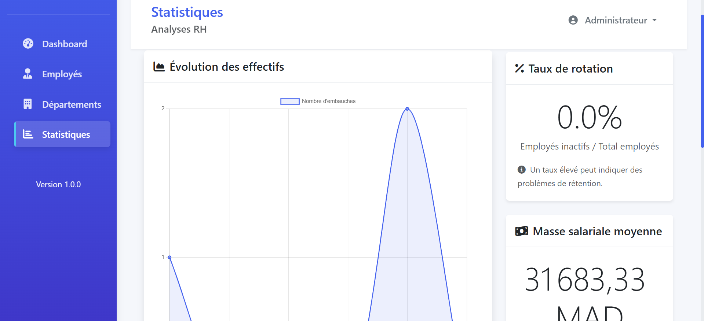

Projet AcadémiquePortail RH & Décisionnel
Système complet d'administration des ressources humaines
Application d'entreprise centralisant le suivi des collaborateurs, la gestion contractuelle, l'affectation par département et l'approbation des congés.
- Architecture MVC robuste sous Symfony 7 & PHP 8
- Contrôle d'accès granulaire (RBAC multi-rôles sécurisé)
- Tableaux de bord interactifs avec métriques en temps réel
Symfony 7
PHP 8
MySQL
Chart.js
RBAC